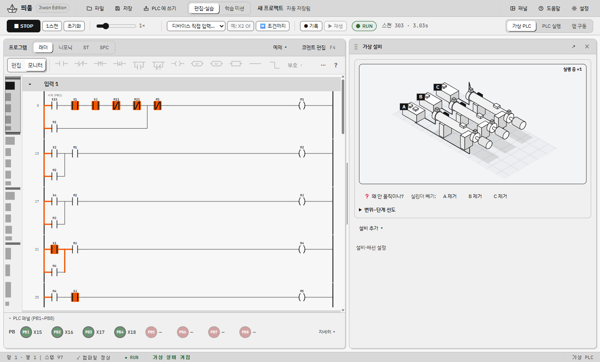
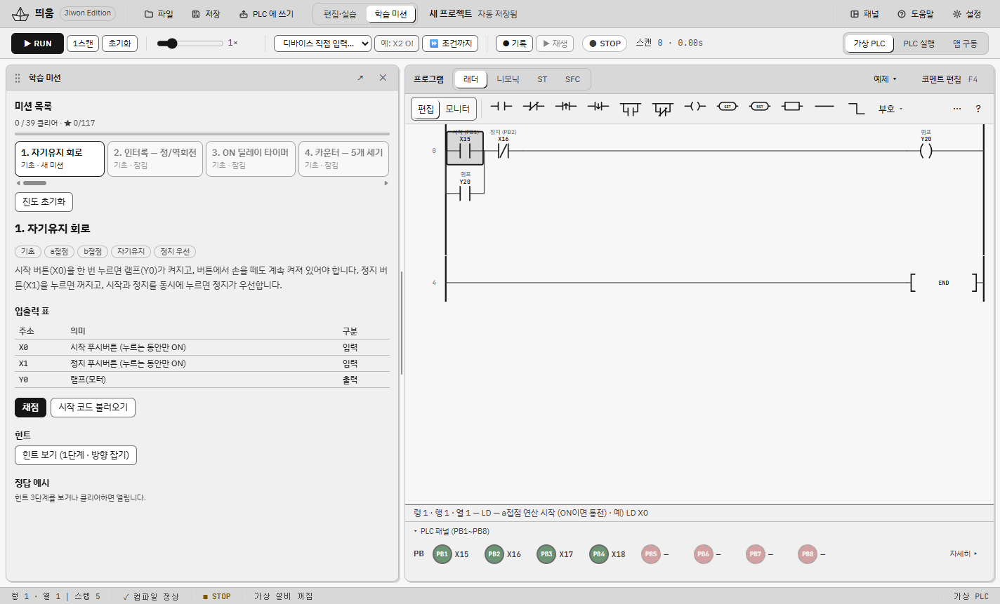
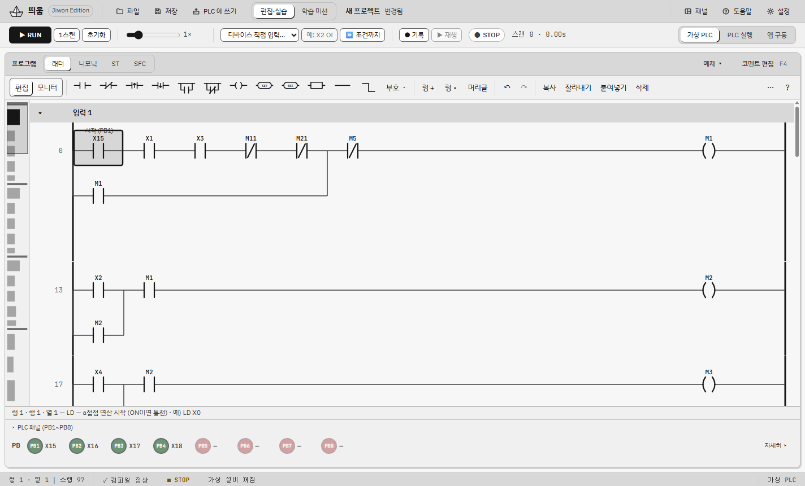
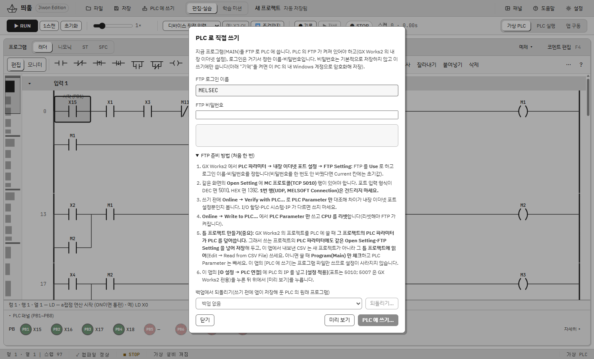
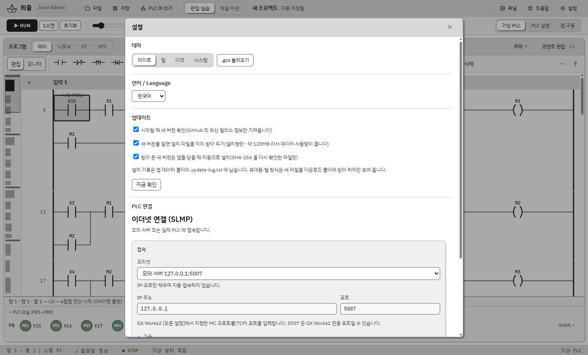
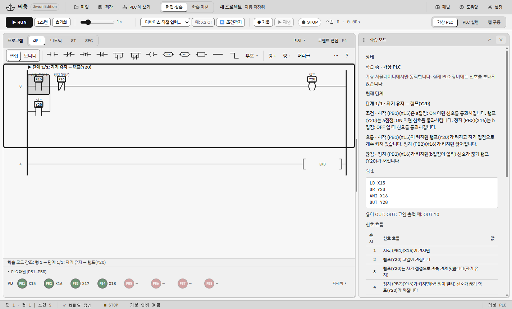
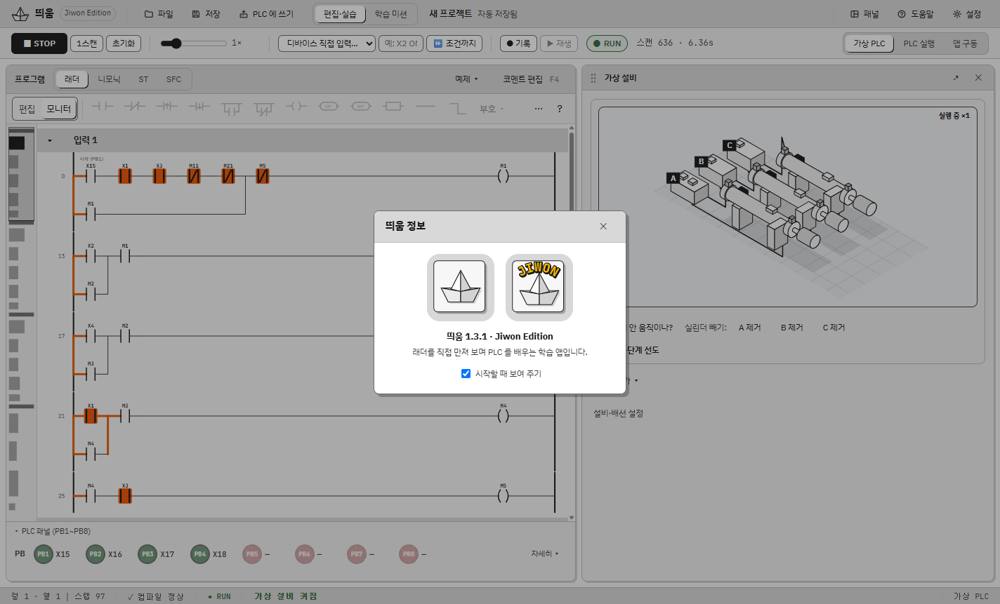

실제 띄움 화면이에요.







PLC 학습에 필요한 것을 한 창에 모았어요. 장비가 없어도 처음부터 끝까지 연습할 수 있어요.
접점·코일·타이머·카운터·비교·산술·32비트 명령을 그리고 IL 과 오가요. 가로선·세로선, 끌어 놓기, 미니맵, 되돌리기, 코멘트, 찾기·교차 참조.
실린더 A·B·C 등각 도면. 래더와 그림이 서로 강조되고, 변위-단계 선도·압력 그래프·“왜 안 움직이나?” 진단이 있어요.
자동 채점, 힌트 3단계, 채점 결과를 그림 위에 보여 주는 덮개로 틀린 곳을 바로 찾아요. 일부러 틀린 프로그램을 고치는 오류 찾기도 있어요.
내 래더를 렁 단위로 나눠 한 단계씩 설명하고, [해 보기]로 센서 신호를 자동으로 넣어 켜지고 꺼지는 것을 확인해요. 모르는 것은 질문칸에 물어보면 돼요(AI 를 연결하면 더 자세히).
필요한 기능을 골라 받아요: PLC 점검 도구·사진 장면 초안·순서 생성기·학습 모드. 플러그인은 격리돼 실행되고 허용한 권한만 써요.
래더·IL 과 함께 ST(구조적 텍스트)와 SFC(순차 기능 차트) 화면을 지원해요. 영문 화면도 있어요.
신호의 ON/OFF 변화를 시간순으로 보고 CSV·PNG 로 내보내요. 입력 기록·재생도 돼요.
설치된 Claude Code 같은 CLI 에 말로 프로그램을 부탁하면 제안해 줘요. [적용]·[되돌리기]는 직접 눌러요.
목록 형식 CSV 가져오기·내보내기, .gxw 열기. 스텝 번호 규칙도 맞췄어요.
SLMP 로 읽기(기본 읽기 전용), 실제 구동 모드, FTP 로 프로그램을 PLC 에 직접 쓰기. 승인 창·자동 백업·되읽기 비교·백업 복구까지 갖췄어요.
새 버전이 나오면 알려 주고, [업데이트] 한 번으로 받아 SHA-256 을 확인한 뒤 설치해요.
서명 없는 exe 가 막히는 PC 용. 공식 Node.js 와 Edge 앱 창으로 같은 화면을 열어요.
Windows 10, 11 에서 쓸 수 있어요.
Ddium-Web-x.y.z.zip)을 시험해 보세요(실험 기능).SHA256SUMS.txt 로 확인할 수 있어요.시뮬레이션은 안전하지만, 실제 설비는 사람이 다칠 수 있어요.
최신 버전부터 보여 줘요. 전체 내용은 CHANGELOG.md 에 있어요.
P0, FEND, RET, FOR, NEXT)을 그리고 입력할 수 있어요.CJ, SCJ, CALL, FOR 동작이 실제 MELSEC-Q 와 같아져요. 예전 프로그램의 결과가 달라질 수 있어요.Z 인덱스 레지스터·인덱스 수식·BSFL 명령이 추가되고 [SFC] 화면이 열려요.
GX Works2 단축키, CALL/FOR 같은 명령, 플러그인 탭과 사진 장면 초안, AI 도우미 모델 선택, 업데이트 버튼 등.
프로그램 이름이 띄움으로 통일돼요. 데이터 폴더·설치 폴더·알림에 나오던 plc-study 를 모두 바꿨고, 예전 데이터는 처음 실행할 때 자동으로 옮겨요. 글자 로고는 ㅢ 의 ㅡ 와 움 의 ㅜ 가 한 줄로 이어져요.
첫 정식 릴리즈. 래더 편집기, 가상 설비, 학습 미션 27개, GX Works2 CSV·.gxw 호환, 실제 PLC 연결(SLMP)과 FTP 직접 쓰기, 한국어 화면과 3가지 테마.
GitHub 의 릴리스 목록이에요. 불러오지 못하면 Releases 페이지에서 받으세요.
띄움은 Apache License 2.0 이에요(Copyright 2026 Dawnilove). MAIN.QPG 형식 조사와 쓰기 순서는 plc-mcp(Apache-2.0)의 연구를 참고해 새로 구현했어요. 글꼴은 IBM Plex Sans KR·JetBrains Mono(OFL-1.1)예요. 전체 고지는 THIRD-PARTY-NOTICES.md 에 있어요.
이 프로젝트는 미쓰비시전기와 관련이 없어요. MELSEC·GX Works2·MELSOFT 는 미쓰비시전기의 상표예요.